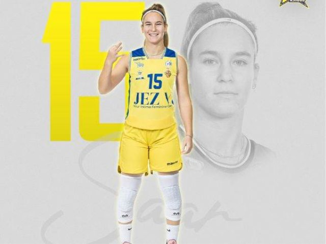

שתי נציגות מאשדוד: סער ווטורי בסגל הרחב של הנבחרת
דור סער וצליל וטורי ממכבי אשדוד נכללו בסגל הרחב של נבחרת ישראל לקראת שלושה משחקים בנובמבר. 13 מתוך 17 השחקניות ייצאו לחלון.

הסיפור בקצרה
שתי נציגות של מכבי אשדוד נכללו בסגל הרחב של נבחרת ישראל בכדורסל נשים: דור סער וצליל וטורי. איגוד הכדורסל פרסם את רשימת הזימונים ביום רביעי, 21 באוקטובר, לקראת שלב הבתים השני במוקדמות אליפות אירופה.
הזימון מעניק לאשדוד נוכחות כפולה בתוך סגל של 17 שחקניות. באתר הרשמי של איגוד הכדורסל מופיעות סער ווטורי בסגל מכבי אשדוד לעונת 2026/27, והוא מאמת את שיוכן למועדון לצד הודעת הנבחרת.
חשוב להבחין בין הסגל הרחב לבין הרשימה הסופית למשחקים. לפי הודעת האיגוד, 13 מתוך 17 השחקניות ייצאו לחלון. לכן הזימון הוא כניסה להכנות ולמאבק על מקום בסגל המשחקים, ולא הבטחה לדקות או להשתתפות בכל אחד מהם.
הנבחרת, שאותה מאמנת שירה העליון, צפויה לפתוח את אימוניה בעוד כשבועיים. ישראל תפגוש את פולין ב־11 בנובמבר, את טורקיה ב־14 בנובמבר ואת מונטנגרו ב־17 בנובמבר. שני המשחקים הראשונים ייערכו בלטביה; בהודעה הרשמית שנבדקה לא פורסמו שעות המשחקים או אולמות, ולכן הם אינם מובאים כאן.
ישראל הגיעה לשלב הזה לאחר שסיימה את שלב הבתים הראשון במאזן מושלם. שתי הראשונות בבית יעפילו לאליפות אירופה בקיץ. מבחינת מכבי אשדוד, עצם הכללתן של שתי שחקניות באותה רשימת הכנות היא נקודת ציון מקומית; ההחלטה מי תצא לחלון תתקבל בהמשך בתוך מסגרת הנבחרת.